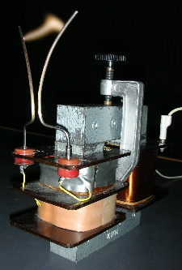

Hörnerblitz
Ein Demonstrationsvesuch zeigt, dass man mit Hilfe eines Wechselspannungs-Transformators Hochspannung erzeugen kann:

Abbildung: Ein Transformator mit Kern aus lamelliertem Eisenblech, Primärspule mit 500 Windungen und Sekundärspule mit 23'000 Windungen wird primärseitig mit dem Haushaltnetz (230 V, 50 Hz) verbunden. Sekundärseitig sind Funkenhörner an der Spule befestigt. Wird die Durchschlagfeldstärke erreicht, so entsteht ein Blitz (Funke, Lichtbogen) an der engsten Stelle der Hörner. Der Funken steigt nach oben, bis er erlischt. Die Hörner sind Grössenordnung 10 cm hoch.
Hoernerblitz-Movie
(Quicktime-Movie des Versuchs (ca. 6 sec, 112 kByte))
Funkenhörner werden in der Starkstromtechnik als einfache Überspannungsableiter verwendet, z.B. für den Blitzschutz.
30. September 2007 / Martin Lieberherr